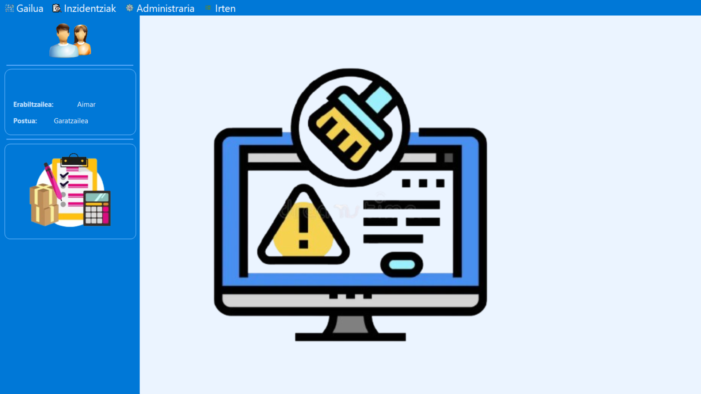
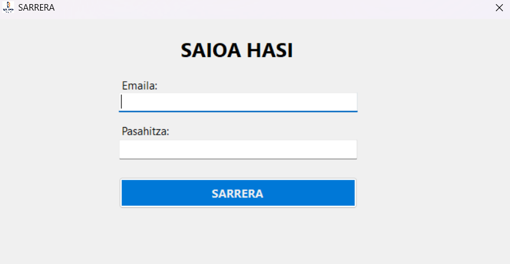
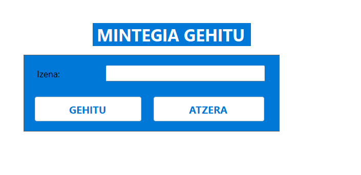

Gure webgunean inbentario-aplikazioari buruzko informazio osagarria, kudeaketa aukerak eta baliabide erabilgarriak eskaintzen ditugu erabiltzaileek sistema hobeto ezagutzeko.
Aplikazioaren erabilera eta kudeaketa errazteko funtzio nagusiak.

Gailu digitalen alta, kontsulta eta kontrol osoa eskaintzen duen sistema.

Rol desberdinen arabera sarbideak eta baimenak kudeatzeko aukera.

Gailuen egoera, kokapena eta ezaugarriak modu errazean ikusteko aukera.
DatuTech aplikazioak ikastetxeko baliabide digitalen kontrol zentralizatua eskaintzen du, informazioa modu egituratuan gordez eta erabiltzaile bakoitzari behar duen sarbidea emanez.
Gure helburua da inbentarioaren kudeaketa digitalizatzea eta erabiltzaileei eguneroko lanean lagunduko dien tresna eroso, intuitibo eta fidagarria eskaintzea.
Aplikazioaren interfazearen adibide bisual batzuk.
Gure kokapena eta harremanetarako erreferentzia.
Jarri gurekin harremanetan edo ezagutu gure proiektuari buruzko informazio gehiago.
Kontaktua Guri buruz